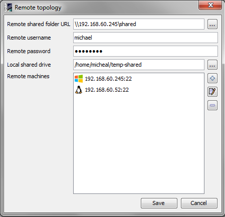
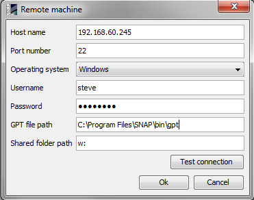
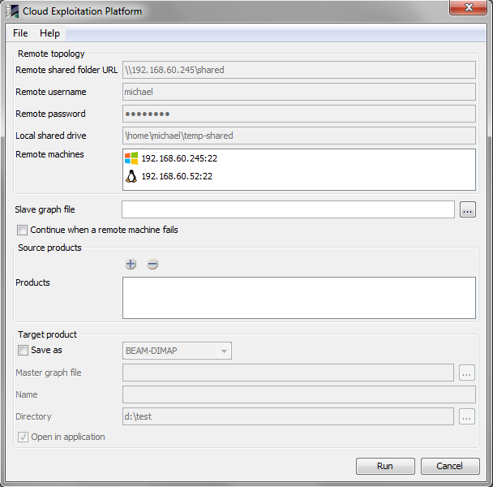

| Cloud Exploitation Platform Processor | |
The Cloud Exploitation Platform Processor is a multi-steps iterative process that executes on the remote machines a slave graph and then on the host machine it executes a master graph using the products created by the remote machines. The overall principle of the algorithm is to distribute processing and reduce the time when running a graph.
The two major steps are:
(i) execute products using a graph on the remote machines by means of the GPT application
(ii) use the output products obtained in the previous step together with a another graph to create the final product.
The products executed on the remote machines must be placed into a shared folder. Each remote machine must have installed the SSH server and the GPT application. When running a graph on a remote machine, the output product is placed in the same shared folder.
The remote topology dialog is placed in the Tools menu. It contains the properties used to access the shared folder and the remote machines for processing a graph.
|
Remote shared folder path Specify the shared folder containing the source products used to process the slave graph on the remote machines. After processing the slave graph on a remote machine the output product is placed in this folder. Remote username Specify the username to connect to the remote shared folder. Remote password Specify the password to connect to the remote shared folder. Local shared folder path Specify the folder on the host machine used to connect to the remote shared folder in order to select the source product to process the slave graph on the remote machines. The property is optional if the processor is running on a machine with Windows operating system. Remote machines Specify the machines used to process the slave graph. |
 |
The remote machine dialog contains the properties used to access a machine by means of the SSH protocol and process a slave graph using the GPT application installed on that machine. The dialog window can be accessed by means of the add/edit buttons from the remote topology dialog.
|
Host name Specify the machine name or its IP address. Port number Specify the port number to connect to the SSH server. Operating system Specify the operating system of the remote machine. Username Specify the username to connect to the remote machine. Password Specify the password to connect to the remote machine. GPT file path Specify the path of the 'gpt' file to start the GPT application. If the property is not specified then the 'PATH' environment variable is used to find the GPT application. Shared folder path Specify the folder path of the machine used to connect to the remote shared folder in order to acccess the source products of the slave graph. Test connection Allow the user to test the SSH connection to the defined remote machine. |
 |
The cloud exploitation platform dialog is placed in the Tools menu and contains the properties used to execute the processor.
Remote topologyRemote shared folder path Specify the shared folder containing the source products used to process the slave graph on the remote machines. After processing the slave graph on a remote machine the output product is placed in this folder. Remote username Specify the username to connect to the remote shared folder. Remote password Specify the password to connect to the remote shared folder. Local shared folder path Specify the folder on the host machine used to connect to the remote shared folder in order to select the source product to process the slave graph on the remote machines. The property is optional if the processor is running on a machine with Windows operating system. Remote machines Specify the remote machines used to process the slave graph. Slave graph file Specify the graph file to be processed on the selected remote machines. Continue when a remote machine fails Specify if the executing can continue when a remote machine throws an error while processing the slave graph. Source productsProducts Specify the products to be processed by the slave graph on the selected remote machines. Target productSave as Used to specify whether the target product should be saved to the file system. The combo box presents a list of file formats, currently BEAM-DIMAP, GeoTIFF, and HDF5. The text field allows to specify a target directory. Master graph file Specify the graph file to be processed on the host machine having as source products the created products by the slave graph. Name Used to specify the name of the target product. Directory Specify the folder path of the target product. Open in application Used to specify whether the target product should be opened in the SNAP application. NOTE: The slave and master graphs must contains at least one read node and only one write node. The number of selected source products to be processed on the remote machines must be multiple of the number of read nodes from the slave graph file. When the master graph file is specified the number of its read nodes must be equal with the number of the output products created by the remote machines. |
 |